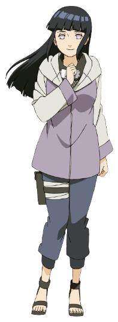

Ficha do Personagem
| Nome | Hinata Hyuga |
|---|---|
| Vila | 🍃 Vila Oculta da Folha (Konoha) |
| Clã | Hyuga |
| Time | Time 8 |
| Professor | Kurenai Yuhi |
| Rank | Chūnin |
| Dōjutsu | Byakugan |
| Natureza do Chakra | Fogo e Relâmpago |
| Aniversário | 27 de Dezembro |
| Idade | 16 anos (Naruto Shippuden) |
História
Hinata Hyuga nasceu como herdeira do poderoso Clã Hyuga. Durante a infância, sofreu com a pressão de corresponder às expectativas de sua família, sendo considerada tímida e insegura.
Inspirada pela determinação de Naruto Uzumaki, Hinata passou a acreditar mais em si mesma, tornando-se uma ninja habilidosa e corajosa. Após a Quarta Grande Guerra Ninja, casou-se com Naruto e formou uma família ao seu lado.
Principais Técnicas
- 👁 Byakugan
- 🖐 Punho Gentil
- ⚪ Oito Trigramas Sessenta e Quatro Palmas
- 🦁 Punhos dos Leões Gêmeos
- 🌀 Proteção dos Oito Trigramas Sessenta e Quatro Palmas
- ⚡ Controle Avançado de Chakra
Curiosidades
- É integrante do famoso Clã Hyuga.
- Possui o poderoso Byakugan.
- Sempre admirou Naruto Uzumaki.
- Casou-se com Naruto após a guerra.
- É mãe de Boruto e Himawari Uzumaki.
- É conhecida pela gentileza e determinação.
- Tornou-se uma das kunoichis mais respeitadas de Konoha.